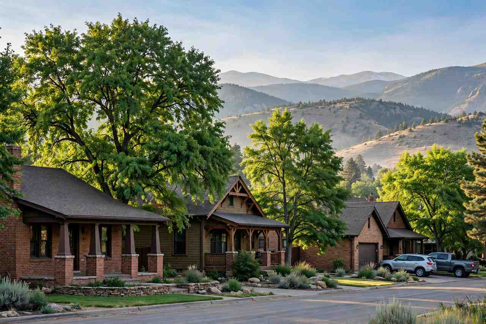

Rodent Control · Haxtun, CO
Fast Rodent Control in Haxtun, CO
If rodents have moved into your Haxtun home or business, Murvo can help today. Our local, licensed crews provide same-day inspection, targeted removal, durable exclusion, and cleanup, all under one flat-rate written quote with a written guarantee. No hourly billing and no surprise add-ons, just rodent specialists serving Haxtun and communities throughout Phillips County every day of the week. Local crews cover 1 ZIP codes in the Haxtun area, from Paoli to the far side of Phillips County.
24/7Availability
1ZIP codes covered
Same-dayResponse
Licensed · Upfront options · Written guarantees · Fully insured
Haxtun at a glance
Local Rodent Control for Haxtun, CO.
Phillips County
Countynortheast Colorado
RegionGreeley · 114 mi
Nearest metro139 miles northeast of Denver
From Denver1
ZIP codes covered Service by service in Haxtun
Rodent Control Services Available in Haxtun
Thirty rodent services, one local standard in Haxtun: inspection-led, exclusion-first, and quoted in writing before work begins. Browse the full list for Phillips County below - each section explains what the service involves here, what it typically costs nationally, and how fast we can start.
- 01Rodent Control↗
- 02Rodent Inspection↗
- 03Rodent Removal↗
- 04Rodent Exclusion↗
- 05Rodent Proofing↗
- 06Rat Control↗
- 07Mice Control↗
- 08Mouse Removal↗
- 09Rat Removal↗
- 10Rodent Trapping↗
- 11Rodent Baiting↗
- 12Rodenticide Application↗
- 13Attic Rodent Removal↗
- 14Crawl Space Rodent Removal↗
- 15Wall Rodent Removal↗
- 16Kitchen Rodent Control↗
- 17Garage Rodent Control↗
- 18Commercial Rodent Control↗
- 19Residential Rodent Control↗
- 20Emergency Rodent Removal↗
- 21Same-Day Rodent Control↗
- 22Rodent Damage Repair↗
- 23Rodent Waste Cleanup↗
- 24Rodent Disinfection↗
- 25Rodent Odor Removal↗
- 26Dead Rodent Removal↗
- 27Rodent Dropping Cleanup↗
- 28Rodent Exclusion for Roofs↗
- 29Rodent Exclusion for Vents↗
- 30Rodent Exclusion for Chimneys↗
Rodent Control in Haxtun
Rodent Control in Haxtun
What does a finished job actually look like? No new droppings, no nighttime movement, and no open route back inside. That is the standard Murvo works toward in Haxtun, with background-checked technicians, a written workmanship guarantee, and follow-up checks that confirm the quiet is real rather than temporary luck.
When you need rodent control in Haxtun, the job starts with what is actually happening in your part of Phillips County. Murvo crews work Haxtun every week, so they know how House mouse (Mus musculus) and Deer mouse (Peromyscus maniculatus) behave around suburban homes at the foothill interface, cabins and second homes, and older in-town homes with basements here - and where they get in: garage door seals, foundation and sill gaps, roofline gaps at snow-loaded eaves, and vents on cabins and outbuildings. We arrive equipped for the full job, confirm the flat rate in writing before work begins, and cover the whole Haxtun area, including Paoli, Fleming. No call-center runaround and no open-ended hourly billing - just a local crew, a clear plan, and a written quote you approve first. The Haxtun crews who handle rodent control also handle the follow-through - proofing, cleanup, and monitoring - so one visit can close the whole problem.
The pattern in Phillips County is predictable, so the response should be methodical. First comes identification, because House mouse (Mus musculus) and Deer mouse (Peromyscus maniculatus) nest and feed in different places. Traps then go where travel is proven, not where it is convenient, and catches are logged by location. Sealing follows only after activity drops, using materials matched to each opening. Finally, monitoring stays in place long enough to catch a late survivor or a new arrival, and those readings decide when the program closes. That discipline is what turns a busy first week into a genuinely quiet second month for the household.
After you book, we confirm a time window and your background-checked technician arrives in a marked vehicle with identification. You receive a flat-rate written quote before any work starts. Once approved, trapping and sealing begin, and follow-up visits are scheduled before we leave, with the guarantee in writing. They walk the property with you, inspect inside and out, and explain what they find with photos. No work begins without your approval.
Need help quickly in Haxtun? Call any time — the emergency line is staffed 24/7, and same-day rodent control appointments are available in most areas. We inspect first, explain the plan in plain language, and put the flat rate in writing before work starts. In Phillips County, most cases involve the House mouse (Mus musculus) and the Deer mouse (Peromyscus maniculatus), so the inspection focuses on their routes first.
The honest answer is that it depends on species, activity level, and how much sealing your home needs, which is why Murvo inspects first and then gives you a flat-rate quote in writing. For national context only, Angi's 2026 data averages rat and mouse removal and control at $396, typically $189 to $655; that is not a Murvo price, and your written quote is the figure you pay.
Rodent Inspection in Haxtun
Rodent Inspection in Haxtun
Most Haxtun inspections start with uncertainty: a noise, a smell, a few droppings that might be old. Murvo turns that uncertainty into a written record. A rodent inspection checks attic, crawl space, roofline, and foundation, photographs the evidence, and ends with a flat-rate written quote for anything worth fixing.
Homeowners in Haxtun call Murvo for rodent inspection because the problem here is specific: House mouse (Mus musculus) pressure around suburban homes at the foothill interface, cabins and second homes, and older in-town homes with basements, tight access at garage door seals, foundation and sill gaps, roofline gaps at snow-loaded eaves, and vents on cabins and outbuildings, and activity that follows the local season. Our Phillips County crews diagnose the real source before recommending work, explain the options in plain language, and quote one flat rate in writing. Across Haxtun - including Paoli, Fleming - every visit is backed by licensed, insured technicians and our written workmanship guarantee. Homes near Paoli tend to show activity first in Haxtun, which is why inspections start with garage door seals, foundation and sill gaps, roofline gaps at snow-loaded eaves, and vents on cabins and outbuildings.
We listen first: when you hear noises, and where, often points straight to the most active nesting areas. The visit ends with a written report covering species, entry points, contamination, and the removal and exclusion steps we recommend, each with a flat-rate price. Technicians then trace active runways, identify whether droppings belong to House mouse (Mus musculus) or Deer mouse (Peromyscus maniculatus), and check insulation and wiring for damage. That detail stops you paying for treatment aimed at the wrong species or the wrong part of the building.
After booking, we confirm your time window by text or call. Before leaving, they review photos and priorities with you, leave the written findings, and schedule any follow-up work you approve. On arrival, your background-checked technician checks in, protects floors and access points, and works through a set inspection checklist inside and out. The inspection itself is backed by licensed, insured service and our written workmanship guarantee on quoted work.
You do not have to wait days for answers in Haxtun. Same-day rodent inspection appointments are available in most areas, urgent calls are taken 24/7, and most home inspections take under an hour. You finish the visit with photos, written findings, and flat-rate pricing for anything we recommend. In Phillips County, most cases involve the House mouse (Mus musculus) and the Deer mouse (Peromyscus maniculatus), so the inspection focuses on their routes first.
Your exact rodent inspection price is confirmed before we visit, and any follow-up work is quoted as a flat rate in writing after the inspection — no hourly billing. For context, Angi's 2026 data puts a professional rodent inspection nationally at $100 to $200, often credited toward the job if you proceed.
Rodent Removal in Haxtun
Rodent Removal in Haxtun
A removal visit should solve a health concern, not create one. Murvo technicians wear protective equipment, bag and remove contaminated material safely, and keep children and pets away from working areas. We explain each stage in plain language, confirm when rooms are safe to use again, and back the finished job with a written workmanship guarantee.
When you need rodent removal in Haxtun, the job starts with what is actually happening in your part of Phillips County. Murvo crews work Haxtun every week, so they know how House mouse (Mus musculus) and Deer mouse (Peromyscus maniculatus) behave around suburban homes at the foothill interface, cabins and second homes, and older in-town homes with basements here - and where they get in: garage door seals, foundation and sill gaps, roofline gaps at snow-loaded eaves, and vents on cabins and outbuildings. We arrive equipped for the full job, confirm the flat rate in writing before work begins, and cover the whole Haxtun area, including Paoli, Fleming. No call-center runaround and no open-ended hourly billing - just a local crew, a clear plan, and a written quote you approve first. Seasonal timing matters for rodent removal in Haxtun: rodents surge in Haxtun from October through April.
Removal starts with an assessment of species, numbers, and access routes across attics, wall voids, garages, and kitchens. Once you approve the written quote, technicians set traps along proven runways, check them on schedule, and remove animals promptly and hygienically. Catch records show progress clearly instead of relying on guesswork. Removal is followed immediately by entry-point exclusion, because new rodents will replace removed ones through any gap left open, and disinfection is arranged after heavy activity. Photos document each stage for you.
Once you book rodent removal in Haxtun, we agree a time window and your technician arrives with traps, protective equipment, and a clear plan. The first visit confirms activity and sets traps; return visits clear and reset them on schedule. When catches reach zero, we walk through the results, discuss sealing, and confirm your written guarantee before closing the job. Progress is photographed and shared with you throughout the program. Nothing is left unexplained.
When rodents are active indoors in Haxtun, waiting rarely helps. Rodent removal can usually start the same day you call, our line answers 24/7 for a rodent loose in a living area, and the first visit sets traps straight away. Scheduled returns then clear and reset them until monitoring shows the home is clear. Around Haxtun, suburban homes at the foothill interface, cabins and second homes, and older in-town homes with basements give rodents the most cover, which is why entry points get checked before traps are set.
Cost depends on the species, how many animals are active, and how much sealing the home needs afterwards, so Murvo inspects first and quotes one flat rate in writing. For national context only, Angi's 2026 data averages rat and mouse removal at $396, typically $189 to $655. That benchmark is not a Murvo price; your written quote is the exact figure.
Rodent Exclusion in Haxtun
Rodent Exclusion in Haxtun
Trapping alone only buys time if rodents can walk straight back in. Rodent exclusion in Haxtun is the permanent fix: a full entry-point survey, then sealing with materials rodents cannot gnaw through. Murvo clears active animals first so none are sealed inside, gives one flat-rate written quote before work starts, and guarantees the workmanship on every seal installed.
When you need rodent exclusion in Haxtun, the job starts with what is actually happening in your part of Phillips County. Murvo crews work Haxtun every week, so they know how House mouse (Mus musculus) and Deer mouse (Peromyscus maniculatus) behave around suburban homes at the foothill interface, cabins and second homes, and older in-town homes with basements here - and where they get in: garage door seals, foundation and sill gaps, roofline gaps at snow-loaded eaves, and vents on cabins and outbuildings. We arrive equipped for the full job, confirm the flat rate in writing before work begins, and cover the whole Haxtun area, including Paoli, Fleming. No call-center runaround and no open-ended hourly billing - just a local crew, a clear plan, and a written quote you approve first. The Haxtun crews who handle rodent exclusion also handle the follow-through - proofing, cleanup, and monitoring - so one visit can close the whole problem.
The sequence matters as much as the materials. Photographs record every finished seal with its location, building a reference you keep. Because a properly sealed home needs far less ongoing treatment, exclusion also lowers long-term reliance on bait. A later monitoring check tests the work honestly, revisiting each sealed point for fresh rub marks, droppings, or gnawing. Active openings are closed first, inactive weaknesses next, and purely cosmetic gaps last, so protection arrives where pressure is highest. The final monitoring visit therefore matters as much as the sealing day itself, and its findings are shared.
Before sealing day, confirm pets are secured and access to the roofline and foundation is clear. The crew then works through the agreed list, checks that no animals remain inside, and fits each seal cleanly. Afterwards you receive the photographs, the guarantee, and a date for the follow-up check that confirms everything is holding as intended. If monitoring ever finds fresh activity at a sealed point, that written inventory tells us exactly what to inspect first.
Rodent exclusion in Haxtun usually starts with a survey visit we can often schedule the same day you call. Sealing itself is booked as soon as any active animals are cleared, because nothing is sealed inside. Most homes are fully sealed within days, not weeks, and urgent entry points near wiring or food areas are prioritized first. Around Haxtun, suburban homes at the foothill interface, cabins and second homes, and older in-town homes with basements give rodents the most cover, which is why entry points get checked before traps are set.
After the survey of your Haxtun home, every opening that needs sealing is listed and priced as one flat-rate written quote, so you pay only for the work your property needs. For national context, Angi's 2026 data puts basic exclusion at $200 to $600 depending on access and the number of openings; that benchmark is not a Murvo price.
Rodent Proofing in Haxtun
Rodent Proofing in Haxtun
In suburban homes at the foothill interface, cabins and second homes, and older in-town homes with basements, prevention is a checklist hiding in plain sight: light under doors, unscreened vents, branches touching the roof, and clutter against walls near garage door seals, foundation and sill gaps, roofline gaps at snow-loaded eaves, and vents on cabins and outbuildings. Murvo works through that checklist across Phillips County properties, separating simple homeowner fixes from specialist sealing, so money goes only where professional materials genuinely help.
When you need rodent proofing in Haxtun, the job starts with what is actually happening in your part of Phillips County. Murvo crews work Haxtun every week, so they know how House mouse (Mus musculus) and Deer mouse (Peromyscus maniculatus) behave around suburban homes at the foothill interface, cabins and second homes, and older in-town homes with basements here - and where they get in: garage door seals, foundation and sill gaps, roofline gaps at snow-loaded eaves, and vents on cabins and outbuildings. We arrive equipped for the full job, confirm the flat rate in writing before work begins, and cover the whole Haxtun area, including Paoli, Fleming. No call-center runaround and no open-ended hourly billing - just a local crew, a clear plan, and a written quote you approve first. Seasonal timing matters for rodent proofing in Haxtun: rodents surge in Haxtun from October through April.
Proofing divides naturally into structure, surroundings, and habits. Structure means sealing utility entries, screening vents and chimneys, and fitting sweeps where doors leak light. Surroundings means trimming branches back from the roofline, moving clutter and timber away from walls, and reducing sheltered harborage. Habits means securing pet food, bird seed, and stored produce so the property stops advertising itself. Technicians assess all three layers in one survey and rank the combined findings by impact, not by what is easiest to sell.
After booking, we confirm your appointment and any access needs, such as gates or attic hatches. Before leaving, you walk the finished sealing together, receive care and storage advice, and confirm the guarantee. Later re-checks verify sweeps, screens, and seals are still holding. On the day, your background-checked technician completes the survey and agreed proofing work in one visit where possible. Nothing is added to your bill without approval first.
Proofing is planned work rather than an emergency, but you can still move fast: rodent proofing surveys in Haxtun are often available the same day and always within a few days. Once you approve the plan, most work is finished in a single visit, ideally before colder weather drives rodents indoors. A Haxtun inspection confirms it on site - dropping size, gnaw marks, and entry points tell the story quickly.
For national context, Angi's 2026 data puts exclusion, the core of proofing, at $200 to $600 for basic work. That figure is a benchmark, not a Murvo price. After surveying your Haxtun property, we separate quick homeowner wins from specialist sealing and quote the professional work as one flat rate in writing, so you can stage spending sensibly.
Rat Control in Haxtun
Rat Control in Haxtun
In suburban homes at the foothill interface, cabins and second homes, and older in-town homes with basements, rats exploit structure and routine together, traveling fences and pipes to reach food near garage door seals, foundation and sill gaps, roofline gaps at snow-loaded eaves, and vents on cabins and outbuildings. Our rat control across Phillips County checks attics, basements, drains, and outbuildings as one connected system, because treating a single room while harborage survives elsewhere simply moves the problem around the property.
In Haxtun, rat control is not a generic spray-and-go service. Rodents exploit garage door seals, foundation and sill gaps, roofline gaps at snow-loaded eaves, and vents on cabins and outbuildings in suburban homes at the foothill interface, cabins and second homes, and older in-town homes with basements, and a fix that ignores those routes does not last. Murvo's Haxtun team inspects first, shows you the evidence - droppings, gnaw marks, entry gaps - and then lays out the work with a flat-rate written quote. We serve all of Phillips County from Haxtun, including Paoli, Fleming, and every job is covered by our written workmanship guarantee. Seasonal timing matters for rat control in Haxtun: rodents surge in Haxtun from October through April.
Wary rats punish rushed trapping, so the program begins with patience. Catches are recorded by location, giving a clear picture of colony size and movement. Exclusion follows at rooflines and entry points, and monitoring devices remain in place afterwards to verify that quiet routes have genuinely stayed quiet. Unset traps are placed on confirmed runways and pre-baited until feeding becomes confident and regular. Only then are traps set, checked frequently, and repositioned as the pattern shifts. Counts matter here, because a falling catch trend tells a different story from a single lucky night.
Call for rat control in Haxtun and we will book an inspection, often the same day for active problems. Trapping visits then run on a set schedule, with placements adjusted as activity shifts. The job closes only when monitoring confirms rats are gone and exclusion is complete. Your technician maps routes and harborage, explains the trapping plan, and gives you a flat-rate written quote before any work begins. Your guarantee is confirmed in writing.
Rats do not wait, and neither do we: rat control in Haxtun can usually start with a same-day inspection, and urgent calls are answered 24/7. Pre-baiting begins on the first visit once you approve the written quote, traps are set as soon as rats are feeding confidently, and scheduled checks keep the program moving until activity stops. If you are seeing signs now, an inspection this week is the fastest way to know which situation you are in.
Rat work varies with species, colony size, and how many entry points need sealing, so Murvo inspects first and quotes one flat rate in writing. For national context only, Angi's 2026 data averages rat control and removal at $396, typically $189 to $655. That benchmark is not a Murvo price; the written quote for your Haxtun home is the exact figure you pay.
Mice Control in Haxtun
Mice Control in Haxtun
How many mice does one sighting usually mean? More than one, and the colony grows while treatment waits. Murvo builds mice control around trapping and sealing rather than bait, uses licensed, insured technicians, and confirms the result with follow-up monitoring, so a quiet week is verified instead of simply hoped for.
In Haxtun, mice control is not a generic spray-and-go service. Rodents exploit garage door seals, foundation and sill gaps, roofline gaps at snow-loaded eaves, and vents on cabins and outbuildings in suburban homes at the foothill interface, cabins and second homes, and older in-town homes with basements, and a fix that ignores those routes does not last. Murvo's Haxtun team inspects first, shows you the evidence - droppings, gnaw marks, entry gaps - and then lays out the work with a flat-rate written quote. We serve all of Phillips County from Haxtun, including Paoli, Fleming, and every job is covered by our written workmanship guarantee. Around Paoli, Fleming, Crook, the pattern is similar: Deer mouse (Peromyscus maniculatus) finds garage door seals, foundation and sill gaps, roofline gaps at snow-loaded eaves, and vents on cabins and outbuildings first, and lasting mice control has to close those routes.
Our integrated approach favors trapping and sealing over baits, with genuinely pet-safe options for family homes. Droppings in cabinets are never dry-swept; following CDC guidance, surfaces are disinfected first so contamination is not spread into the air, and nesting debris is bagged and removed. Food-storage advice removes the attraction that drew mice in, and sealing is completed as whole-home proofing so kitchens, attics, and voids stay clear after the program ends. Catch records show exactly how numbers fall each visit.
During the program, store opened food in sealed containers and keep trap areas undisturbed. At the end you review the catch record together, receive prevention advice, and confirm the written guarantee before close. Your background-checked technician returns to clear and reset clusters, adjusts placements if the pattern shifts, and completes sealing once numbers fall. Prevention notes cover the exact storage and sealing issues found at your home, making them practical rather than generic advice.
Mice programs move quickly in Haxtun: a mice control survey can often be arranged the same day you call, and traps are set on that first visit once you approve the quote. Because mice investigate new objects fast, catches usually begin quickly, and scheduled check visits follow until a final confirmation shows activity has fully stopped. Around Haxtun, suburban homes at the foothill interface, cabins and second homes, and older in-town homes with basements give rodents the most cover, which is why entry points get checked before traps are set.
Mouse work is priced by the number of rooms affected and the amount of sealing involved, so Murvo surveys first and quotes one flat rate in writing. For national context only, Angi's 2026 data averages rat and mouse control and removal at $396, typically $189 to $655. That is not a Murvo price; your written quote is exact.
Mouse Removal in Haxtun
Mouse Removal in Haxtun
You found droppings in a cabinet or heard scratching in the attic of your Haxtun home, and you want the mice out, not managed indefinitely. Murvo's mouse removal locates nests and feeding areas room by room, runs a multi-trap program until catches reach zero, and seals access points behind it. One flat-rate written quote is agreed before work begins.
In Haxtun, mouse removal is not a generic spray-and-go service. Rodents exploit garage door seals, foundation and sill gaps, roofline gaps at snow-loaded eaves, and vents on cabins and outbuildings in suburban homes at the foothill interface, cabins and second homes, and older in-town homes with basements, and a fix that ignores those routes does not last. Murvo's Haxtun team inspects first, shows you the evidence - droppings, gnaw marks, entry gaps - and then lays out the work with a flat-rate written quote. We serve all of Phillips County from Haxtun, including Paoli, Fleming, and every job is covered by our written workmanship guarantee. Coverage for mouse removal spans 1 ZIP codes in Phillips County, including 80731.
We start with a nest and feeding-area survey, checking attics, cabinets, under-floor voids, and behind kitchen units. All removed animals and contaminated material are bagged and taken away. Dead mice in inaccessible voids are located and dealt with before odor becomes a problem, and access points are then sealed as part of full exclusion. Technicians set multiple traps at proven activity points, return to clear and reset them, and track catch numbers until they fall to zero. Photos record progress at every visit.
For urgent mouse problems in Haxtun, contact Murvo for a same-day response where available. Your technician surveys the home, explains the multi-trap plan, and confirms a flat-rate written quote before starting. Return visits are scheduled to clear and reset traps, and cleanup and sealing follow once catches reach zero. The final visit confirms the result and your written workmanship guarantee. You are updated after every visit, without ever chasing us.
In Haxtun, mouse removal can often begin the same day you call, especially where mice are active in kitchens or living areas. The first visit surveys nesting sites and sets traps immediately after you approve the quote; because mice investigate traps quickly, catches usually start fast, and return visits continue until numbers reach zero. In Phillips County, most cases involve the House mouse (Mus musculus) and the Deer mouse (Peromyscus maniculatus), so the inspection focuses on their routes first.
Mouse removal cost reflects the number of rooms involved and how much sealing is needed, which is why Murvo surveys first and quotes a flat rate in writing. For national context only, Angi's 2026 data averages rat and mouse removal at $396, typically $189 to $655. That benchmark is not a Murvo price; your written quote covers your exact program.
Rat Removal in Haxtun
Rat Removal in Haxtun
Roof rats and Norway rats behave and enter very differently, and in Haxtun the distinction decides where traps go and which gaps get sealed. suburban homes at the foothill interface, cabins and second homes, and older in-town homes with basements reached through garage door seals, foundation and sill gaps, roofline gaps at snow-loaded eaves, and vents on cabins and outbuildings can hide attic colonies or basement harborage for months. Our licensed, background-checked technicians trace the full route, remove the colony, and sanitize contaminated areas where nests were found.
When you need rat removal in Haxtun, the job starts with what is actually happening in your part of Phillips County. Murvo crews work Haxtun every week, so they know how House mouse (Mus musculus) and Deer mouse (Peromyscus maniculatus) behave around suburban homes at the foothill interface, cabins and second homes, and older in-town homes with basements here - and where they get in: garage door seals, foundation and sill gaps, roofline gaps at snow-loaded eaves, and vents on cabins and outbuildings. We arrive equipped for the full job, confirm the flat rate in writing before work begins, and cover the whole Haxtun area, including Paoli, Fleming. No call-center runaround and no open-ended hourly billing - just a local crew, a clear plan, and a written quote you approve first. Seasonal timing matters for rat removal in Haxtun: rodents surge in Haxtun from October through April.
Removal stays trap-led and exclusion-backed throughout. Monitoring devices and a documented final walkthrough then prove activity has ended, and proofing advice covers drains, vents, and rooflines going forward. Locked bait stations appear only where a site genuinely justifies them, positioned away from pets and food, labeled, and monitored on schedule; loose bait is never used. After clearance, contaminated areas are sanitized carefully, with surfaces disinfected before cleaning and droppings never dry-swept. That written evidence stays with you, including the monitoring readings that supported the decision to sign off.
Book and we will agree a visit time, with same-day appointments for active infestations where available. Your technician assesses the colony, explains each stage, and confirms the written quote before pre-baiting begins. Repeat visits are scheduled in advance, progress is reported after each one, and sealing follows once catches stop and monitoring stays clear. Every visit is documented with counts and locations, so the final clearance rests on a complete record rather than a single quiet check.
In Haxtun, rat removal can usually start the same day you call, with 24/7 answering for rats active in living areas. Pre-baiting begins on the first visit after you approve the written quote, and traps are set once rats feed confidently, typically within days. Repeat visits then run frequently until monitoring confirms the colony is gone. Murvo's Haxtun crews explain the finding either way, and the flat-rate quote leaves the decision with you.
Rat removal pricing depends on colony size, access, and the sealing needed afterwards, so Murvo assesses your property first and quotes a flat rate in writing. For national context only, Angi's 2026 data averages rat removal at $396, typically $189 to $655. That is a benchmark, not a Murvo price, and your written quote covers the full program described.
Rodent Trapping in Haxtun
Rodent Trapping in Haxtun
Trapping is the most accountable way to clear rodents: every catch is counted, located, and recorded. Murvo's rodent trapping in Haxtun places traps perpendicular to walls and along beams, pipes, and fence lines where rodents actually travel, using snap traps, multi-catch devices, or live-capture options as the situation requires. You approve one flat-rate written quote before we start.
When you need rodent trapping in Haxtun, the job starts with what is actually happening in your part of Phillips County. Murvo crews work Haxtun every week, so they know how House mouse (Mus musculus) and Deer mouse (Peromyscus maniculatus) behave around suburban homes at the foothill interface, cabins and second homes, and older in-town homes with basements here - and where they get in: garage door seals, foundation and sill gaps, roofline gaps at snow-loaded eaves, and vents on cabins and outbuildings. We arrive equipped for the full job, confirm the flat rate in writing before work begins, and cover the whole Haxtun area, including Paoli, Fleming. No call-center runaround and no open-ended hourly billing - just a local crew, a clear plan, and a written quote you approve first. Coverage for rodent trapping spans 1 ZIP codes in Phillips County, including 80731.
Adjustment is where experience shows. Baits are refreshed and matched to what the species is already eating nearby. Households receive a simple map of device locations and safety guidance for children and pets. As numbers fall toward zero, attention shifts to exclusion recommendations and cleanup, converting a trapping program into lasting protection. If catches cluster at one end of a runway, placements concentrate there; if a route goes quiet while another warms up, devices move accordingly. Households can follow that adjustment process through the shared catch log, which records every change of position.
After booking, we confirm your time window and any pet or child considerations for trap placement. On arrival, your background-checked technician explains each device location and what to expect between visits. Follow-up checks are booked ahead, catches are removed promptly and hygienically, and placements are adjusted as the pattern changes. The program ends with a monitoring check and a clear written summary. You always know what was caught and where.
In Haxtun, rodent trapping can usually start the same day you call, with traps placed or pre-baiting begun on the first visit after you approve the quote. Mice often investigate within the first night; wary rats need a few days of pre-baiting before traps are set. Scheduled check visits then keep catches moving until numbers reach zero. A Haxtun inspection confirms it on site - dropping size, gnaw marks, and entry points tell the story quickly.
Trapping is usually quoted as part of a complete removal program rather than by the trap, and the price depends on species, activity level, and how many check visits are needed. Murvo inspects first and quotes one flat rate in writing covering the program and its check visits, so there are no per-visit surprises and no hourly billing at any stage.
Rodent Baiting in Haxtun
Rodent Baiting in Haxtun
State rules shape how baiting works in Colorado: some states restrict anticoagulant rodenticides, and Murvo follows the strictest applicable limits on every job. Before any station is placed at your Haxtun property, a technician maps activity, reviews pet and child concerns with you, and explains exactly what to watch for between monitoring visits. Nothing is placed without that conversation.
In Haxtun, rodent baiting is not a generic spray-and-go service. Rodents exploit garage door seals, foundation and sill gaps, roofline gaps at snow-loaded eaves, and vents on cabins and outbuildings in suburban homes at the foothill interface, cabins and second homes, and older in-town homes with basements, and a fix that ignores those routes does not last. Murvo's Haxtun team inspects first, shows you the evidence - droppings, gnaw marks, entry gaps - and then lays out the work with a flat-rate written quote. We serve all of Phillips County from Haxtun, including Paoli, Fleming, and every job is covered by our written workmanship guarantee. Homes near Paoli tend to show activity first in Haxtun, which is why inspections start with garage door seals, foundation and sill gaps, roofline gaps at snow-loaded eaves, and vents on cabins and outbuildings.
Placement discipline protects the household. Stations stay away from pet play areas, food storage, and anywhere children gather, and every location is agreed with you before installation. If a property cannot be baited safely, technicians say so and rely on trapping and proofing instead. Records from each visit show consumption trends honestly, including when activity has moved rather than fallen, so decisions about continuing, relocating, or removing stations rest on evidence you can inspect yourself. You receive copies of those records, so the reasoning behind every placement decision is open to inspection.
During monitoring, keep station areas undisturbed and tell us about any change in droppings or sightings. The program closes with stations out, sealing recommendations confirmed, and the full record, including photographs, left with you in writing. Your technician checks consumption on schedule, reports the trend plainly, and adjusts or removes stations as evidence dictates. If your household circumstances change, tell us; station locations and the wider plan can be reviewed and adjusted at the next check.
In Haxtun, rodent baiting starts with an inspection visit we can often arrange the same day you call. Stations are only placed after activity is mapped and you approve the written quote and each location, so setup is deliberate rather than rushed. Monitoring visits then run on a fixed schedule until consumption stops and activity is confirmed clear. In Phillips County, activity follows the local season, so timing the work matters as much as the method.
How many locked stations your property needs and how long monitoring runs determine the cost, so Murvo inspects and maps activity first, then quotes one flat rate in writing covering placement and scheduled checks. There are no per-visit surprises, and because the approach is exclusion-first, the aim is to reduce and eventually remove stations rather than maintain them forever.
Rodenticide Application in Haxtun
Rodenticide Application in Haxtun
What does the law in Colorado allow, and what will you be told? State rules restrict certain rodenticides, and Murvo complies with every applicable rule on every job. You receive label and safety information for any product used at your Haxtun property before application begins.
Homeowners in Haxtun call Murvo for rodenticide application because the problem here is specific: House mouse (Mus musculus) pressure around suburban homes at the foothill interface, cabins and second homes, and older in-town homes with basements, tight access at garage door seals, foundation and sill gaps, roofline gaps at snow-loaded eaves, and vents on cabins and outbuildings, and activity that follows the local season. Our Phillips County crews diagnose the real source before recommending work, explain the options in plain language, and quote one flat rate in writing. Across Haxtun - including Paoli, Fleming - every visit is backed by licensed, insured technicians and our written workmanship guarantee. Homes near Paoli tend to show activity first in Haxtun, which is why inspections start with garage door seals, foundation and sill gaps, roofline gaps at snow-loaded eaves, and vents on cabins and outbuildings.
Application begins with a thorough inspection to confirm species and activity levels and to decide whether rodenticide is needed at all; often, professional trapping plus controlled outdoor baiting is enough, and if trapping alone can solve your problem safely, that is the route we recommend first. When treatment is justified, we follow Inspect, Remove, Exclude, Clean, and Monitor: stations are mapped, labeled, anchored, and checked on schedule, with amounts recorded at every visit. Products stay inside locked stations at all times.
After booking, we discuss children, pets, livestock, and wildlife at your property before the visit, so product decisions are informed from the start. Scheduled checks follow, amounts are recorded and reported, and stations are removed when activity is confirmed clear. On arrival, your background-checked technician inspects, talks you through the plan and label information, and only applies product once you approve the written quote. Safety information stays with you throughout the program.
No responsible rodenticide application starts without an inspection, and in Haxtun that inspection can often be scheduled the same day you call. If treatment is justified and you approve the written quote, locked stations are installed on that visit. Monitoring then runs on schedule, and treatment stops as soon as the data shows activity has ended. In Phillips County, most cases involve the House mouse (Mus musculus) and the Deer mouse (Peromyscus maniculatus), so the inspection focuses on their routes first.
Application cost depends on the number of locked stations, the product required under Colorado rules, and how long monitoring runs. Murvo inspects first, explains whether trapping or exclusion could avoid chemical control entirely, and then quotes one flat rate in writing before work begins. The quote covers scheduled monitoring visits, so there are no per-visit surprises later.
Attic Rodent Removal in Haxtun
Attic Rodent Removal in Haxtun
Scratching overhead at night in Haxtun usually means House mouse (Mus musculus) climbing to the roofline or Deer mouse (Peromyscus maniculatus) slipping through vent gaps into your attic. Murvo's attic rodent removal inspects the attic, roof, and eaves, traps active animals up there, and seals the roofline behind them. Same-day visits are prioritized when chewed wiring is found, because that damage is a genuine fire risk.
In Haxtun, attic rodent removal is not a generic spray-and-go service. Rodents exploit garage door seals, foundation and sill gaps, roofline gaps at snow-loaded eaves, and vents on cabins and outbuildings in suburban homes at the foothill interface, cabins and second homes, and older in-town homes with basements, and a fix that ignores those routes does not last. Murvo's Haxtun team inspects first, shows you the evidence - droppings, gnaw marks, entry gaps - and then lays out the work with a flat-rate written quote. We serve all of Phillips County from Haxtun, including Paoli, Fleming, and every job is covered by our written workmanship guarantee. Seasonal timing matters for attic rodent removal in Haxtun: rodents surge in Haxtun from October through April.
Cleanup overhead demands care. Droppings and nesting material are never dry-swept, because that can spread contamination into the air; surfaces are disinfected first, then waste is removed hygienically by technicians in protective equipment. Contaminated insulation is assessed honestly, with repair referrals where replacement is warranted. Poison is avoided in attics deliberately, since animals dying in inaccessible corners create odor and retrieval problems. Adjoining crawl spaces are checked before the job is signed off as complete. The result is a documented attic: cleared, sealed, cleaned where needed, and verified quiet before closure.
Book attic rodent removal in Haxtun and we will arrange an attic visit, same-day where chewed wiring or heavy activity makes it urgent. Your technician inspects the attic and roofline, shows you photographs of the evidence, and confirms a flat-rate written quote before removal begins. Trapping checks follow on schedule, sealing and cleanup complete the job, and monitoring confirms the attic stays clear under guarantee. You approve every stage before it happens.
Overhead scratching in Haxtun often gets a same-day attic rodent removal visit, and attics with chewed wiring are prioritized because of the fire risk. Trapping starts on the first visit once you approve the written quote, checks run on schedule, and most attics are cleared and sealed within days. Monitoring stays in place briefly afterwards to confirm nothing remains inside. The written quote for your Haxtun property will spell out exactly which of these applies before any work starts.
Activity levels, roofline sealing, and whether contaminated insulation needs cleanup all affect attic pricing, so Murvo inspects first and quotes one flat rate in writing for the removal program. Cleanup options are priced separately in writing before you decide, so nothing is added once work is underway.
Crawl Space Rodent Removal in Haxtun
Crawl Space Rodent Removal in Haxtun
In suburban homes at the foothill interface, cabins and second homes, and older in-town homes with basements, the space underneath offers rodents shelter, burrowing ground at vents, and pipe runs reached through garage door seals, foundation and sill gaps, roofline gaps at snow-loaded eaves, and vents on cabins and outbuildings across Phillips County. Standing water and leaking pipes raise pressure further, so technicians flag moisture problems during inspection too. Removal also traces wall-void routes upward, because below-house activity often connects to the attic.
In Haxtun, crawl space rodent removal is not a generic spray-and-go service. Rodents exploit garage door seals, foundation and sill gaps, roofline gaps at snow-loaded eaves, and vents on cabins and outbuildings in suburban homes at the foothill interface, cabins and second homes, and older in-town homes with basements, and a fix that ignores those routes does not last. Murvo's Haxtun team inspects first, shows you the evidence - droppings, gnaw marks, entry gaps - and then lays out the work with a flat-rate written quote. We serve all of Phillips County from Haxtun, including Paoli, Fleming, and every job is covered by our written workmanship guarantee. In Haxtun, crawl space rodent removal calls most often involve suburban homes at the foothill interface, cabins and second homes, and older in-town homes with basements, where garage door seals, foundation and sill gaps, roofline gaps at snow-loaded eaves, and vents on cabins and outbuildings decide whether the fix holds.
Cleanup below a home follows CDC guidance: droppings and nesting debris are never dry-swept, because disturbing them can spread contamination; surfaces are disinfected first, then waste is bagged and removed by technicians in protective equipment. We also trace connections upward through wall voids, since treating the crawl space alone misses rodents traveling to the attic. Photographs of finished sealing are supplied with your guarantee paperwork, and access panels are refitted securely after every visit. Moisture problems found are reported with practical recommendations.
After booking, we confirm crawl-space access and any known leaks or standing water beneath the home. On arrival, your background-checked technician inspects with protective equipment, sets traps at active areas, and talks you through the findings with photos. Follow-up visits are booked ahead for clearance and sealing. The job closes with a monitoring check and a walkthrough of the documented results together. Every stage is approved by you before it proceeds.
In Haxtun, crawl space rodent removal inspections can usually be arranged within a few days, and sooner where odors are drifting into living areas or activity sounds heavy. Trapping starts on the first visit after you approve the written quote, and clearance plus sealing follow in sequence, with monitoring left in place until the space below is confirmed quiet. If you are seeing signs now, an inspection this week is the fastest way to know which situation you are in.
Access, the number of vents and gaps to seal, and whether waste cleanup is required all shape crawl-space pricing, so Murvo inspects first and quotes one flat rate in writing. Cleanup options are priced in writing before you decide whether to include them, and there are no surprise charges for extra vents within the agreed scope.
Wall Rodent Removal in Haxtun
Wall Rodent Removal in Haxtun
We deliberately avoid poison for wall problems in Haxtun, because a poisoned rodent dying in a void creates exactly the odor problem homeowners fear. Trapping and exclusion are cleaner and safer around kids and pets. After removal, a quiet-wall check at different times of day confirms no second animal remains hidden in a connected void before we finish.
In Haxtun, wall rodent removal is not a generic spray-and-go service. Rodents exploit garage door seals, foundation and sill gaps, roofline gaps at snow-loaded eaves, and vents on cabins and outbuildings in suburban homes at the foothill interface, cabins and second homes, and older in-town homes with basements, and a fix that ignores those routes does not last. Murvo's Haxtun team inspects first, shows you the evidence - droppings, gnaw marks, entry gaps - and then lays out the work with a flat-rate written quote. We serve all of Phillips County from Haxtun, including Paoli, Fleming, and every job is covered by our written workmanship guarantee. Seasonal timing matters for wall rodent removal in Haxtun: rodents surge in Haxtun from October through April.
Once the void is clear, we apply proofing to wall entry routes, sealing baseboard and pipe gaps linked to kitchen activity so the route cannot reopen. Monitoring at key access points then confirms the void stays quiet. If a rodent has died in the wall, retrieval is followed by sanitation: contaminated material is never dry-swept, surfaces are disinfected first following CDC guidance, and odor treatment is applied so other rodents are not attracted back. Connected voids are checked before we finish.
Between visits, note the times and rooms where sounds continue, since that pattern guides adjustments. Sign-off happens only when monitoring confirms silence, sealing and sanitation are complete, and your guarantee paperwork is confirmed in writing. Your background-checked technician clears traps, checks connected voids, and runs quiet checks at varied times of day. Silence is checked more than once before sign-off, because a single quiet evening can mislead when an animal simply moves elsewhere.
Persistent wall scratching in Haxtun often qualifies for a same-day locating visit, especially when it is keeping you awake. On that first visit, once you approve the written quote, traps are set at void access points; because rodents travel the void nightly, results usually follow within days. Quiet-wall checks confirm the silence before we sign off. If you are seeing signs now, an inspection this week is the fastest way to know which situation you are in.
How precisely the activity can be located, and whether a minimal access cut turns out to be needed, decide the price of wall work. Murvo therefore locates the activity first and quotes a flat rate in writing, covering the trapping, sealing, and monitoring in your plan, so wall access never becomes an open-ended bill.
Kitchen Rodent Control in Haxtun
Kitchen Rodent Control in Haxtun
Droppings in cabinets, gnawed packaging or grease marks along the kickboards mean House mouse (Mus musculus) or Deer mouse (Peromyscus maniculatus) are feeding where your family eats. Our kitchen rodent control in Haxtun removes rodents safely, seals gaps behind appliances and pipes, and helps keep food preparation areas clean, hygienic and properly protected.
Homeowners in Haxtun call Murvo for kitchen rodent control because the problem here is specific: House mouse (Mus musculus) pressure around suburban homes at the foothill interface, cabins and second homes, and older in-town homes with basements, tight access at garage door seals, foundation and sill gaps, roofline gaps at snow-loaded eaves, and vents on cabins and outbuildings, and activity that follows the local season. Our Phillips County crews diagnose the real source before recommending work, explain the options in plain language, and quote one flat rate in writing. Across Haxtun - including Paoli, Fleming - every visit is backed by licensed, insured technicians and our written workmanship guarantee. Seasonal timing matters for kitchen rodent control in Haxtun: rodents surge in Haxtun from October through April.
Work begins with a kitchen-focused inspection behind fridges, ovens and sinks, inside cabinets and along kickboards, reading droppings and grease marks to identify the species and its routes. Discreet traps are placed away from food preparation surfaces, never loose poison where children, pets or food could reach it. We then trace activity into wall voids and adjoining rooms, seal gaps around waste pipes and cabinet holes with durable materials, disinfect contaminated areas, and monitor until activity stops completely. Nothing is left to guesswork at any stage.
After you book, a licensed, background-checked Murvo technician arrives at the agreed time and inspects behind appliances, sinks and cabinets. Once approved, trapping and sealing go ahead, contaminated areas are disinfected, and we explain the hygiene notes for your layout. Follow-up monitoring continues until kitchen activity stops, and the work is backed by our written workmanship guarantee. You receive a flat-rate written quote before anything starts. You stay informed at every stage of the work.
Our phone lines are open 24/7, and kitchen cases involving droppings near food preparation areas are treated as a priority. In many Haxtun cases we can arrange a same-day visit, subject to technician availability. Call, describe what you have found, and we will offer the earliest appointment we can. In Phillips County, most cases involve the House mouse (Mus musculus) and the Deer mouse (Peromyscus maniculatus), so the inspection focuses on their routes first.
Cost depends on how many rodents are active, where they are entering, and how much sealing and cleanup the kitchen needs. Murvo inspects first, then gives one flat-rate written quote covering trapping, sealing and follow-up monitoring, with no hourly billing or add-on surprises. You approve the full price before any work begins, and the quote is backed by our written workmanship guarantee.
Garage Rodent Control in Haxtun
Garage Rodent Control in Haxtun
Boxes stacked against a wall make perfect cover. While the garage stays undisturbed, rodents chew, nest and breed out of sight in many suburban homes at the foothill interface, cabins and second homes, and older in-town homes with basements. Our team in Haxtun works through the clutter zones methodically, removes the animals, cleans affected spots, and shows you how raised, sealed storage removes the shelter they depend on.
Homeowners in Haxtun call Murvo for garage rodent control because the problem here is specific: House mouse (Mus musculus) pressure around suburban homes at the foothill interface, cabins and second homes, and older in-town homes with basements, tight access at garage door seals, foundation and sill gaps, roofline gaps at snow-loaded eaves, and vents on cabins and outbuildings, and activity that follows the local season. Our Phillips County crews diagnose the real source before recommending work, explain the options in plain language, and quote one flat rate in writing. Across Haxtun - including Paoli, Fleming - every visit is backed by licensed, insured technicians and our written workmanship guarantee. Homes near Paoli tend to show activity first in Haxtun, which is why inspections start with garage door seals, foundation and sill gaps, roofline gaps at snow-loaded eaves, and vents on cabins and outbuildings.
The garage process pairs removal with long-term proofing. We check vehicle wiring and stored soft furnishings for gnaw damage, recommend sealed containers instead of cardboard, and set monitoring points to verify the space stays clear. The aim is a garage that no longer shelters rodents or feeds them into your home. Technicians remove rodents and nests, disinfect contaminated areas where needed, and seal the gaps mice and rats squeeze through, remembering mice need only a very small opening. Safety of occupants and pets guides every method chosen.
One conversation sets the appointment and any access needs. Once you say yes, removal and proofing get underway, with contaminated nesting handled carefully. Later, we come back to read the monitors, tighten any weak spots, and confirm the space is clear. Your technician arrives, inspects from the door seal to the rear wall, and explains a plan with one written price. You keep a simple record of what was sealed and where to check in future.
We answer calls 24/7 and treat garages with active nesting, chewed wiring or rodents moving into the house as urgent. Same-day appointments in Haxtun are often available, depending on technician schedules. Call with a description of the signs you have seen and we will offer you the earliest visit we can. The written quote for your Haxtun property will spell out exactly which of these applies before any work starts.
As a national benchmark, Angi's 2026 data shows rat extermination ranging from $189-$655, with an average of $396; that is context only, not a Murvo price. Garage work varies with size, activity and the proofing doors and walls require. After inspecting, Murvo quotes one flat rate in writing for trapping, nest removal, sealing and monitoring, for your approval before anything starts.
Commercial Rodent Control in Haxtun
Commercial Rodent Control in Haxtun
Loading doors rarely close perfectly, and bin stores rarely stay clean for long. Those two facts explain much commercial rodent pressure in Phillips County. Our commercial rodent control in Haxtun tackles docks, waste areas, kitchens and storage together, with scheduled monitoring and written reports that show managers exactly what changed between every single visit.
Homeowners in Haxtun call Murvo for commercial rodent control because the problem here is specific: House mouse (Mus musculus) pressure around suburban homes at the foothill interface, cabins and second homes, and older in-town homes with basements, tight access at garage door seals, foundation and sill gaps, roofline gaps at snow-loaded eaves, and vents on cabins and outbuildings, and activity that follows the local season. Our Phillips County crews diagnose the real source before recommending work, explain the options in plain language, and quote one flat rate in writing. Across Haxtun - including Paoli, Fleming - every visit is backed by licensed, insured technicians and our written workmanship guarantee. Seasonal timing matters for commercial rodent control in Haxtun: rodents surge in Haxtun from October through April.
Your program begins away from the shop floor, in the places rodents prefer: docks, plant rooms, bin stores, ceiling voids and delivery entrances. Exclusion targets dock seals, vents and service gaps. We map activity there first, then connect it to sightings inside. Monitored traps are positioned discreetly, outdoor stations stay locked, and product use is logged in full. After each visit you receive a clear report covering findings, actions and trends, written so a restaurant manager or warehouse operator can hand it straight to an auditor.
First comes a conversation about your site, sector and any audit deadlines ahead. Each visit closes with findings in writing and clear next actions. Next, a full survey documents entry points, harborage and activity, followed by a written price for the agreed scope. Work then proceeds around your hours, keeping customers and deliveries moving. Managers review progress with us regularly, so the program stays matched to the building, the season and the level of rodent pressure outside.
Commercial calls are taken 24/7, and a live sighting during trading is handled as an emergency with discretion to protect customers and reputation. The visit we can offer in Haxtun depends on technician availability, and we will always give you the earliest one possible. We can also advise on immediate steps to protect stock and your audit position while you wait. The written quote for your Haxtun property will spell out exactly which of these applies before any work starts.
Commercial pricing depends on site size, sector, activity levels and how much exclusion and monitoring the site needs. Restaurants, warehouses and food premises are scoped individually after a survey. Murvo quotes a flat rate in writing for initial work, or a clear scheduled-service price for ongoing programs, before anything begins. There are no vague charges, and reports are included for your audit file.
Residential Rodent Control in Haxtun
Residential Rodent Control in Haxtun
Scratching above the ceiling rarely stays an attic-only problem. Rodents move through voids, drop into kitchens and nest where the house is warmest. Murvo's residential rodent control in Haxtun treats the whole property as one system, and you receive a flat-rate written quote after inspection, before removal, sealing or cleanup work begins.
When you need residential rodent control in Haxtun, the job starts with what is actually happening in your part of Phillips County. Murvo crews work Haxtun every week, so they know how House mouse (Mus musculus) and Deer mouse (Peromyscus maniculatus) behave around suburban homes at the foothill interface, cabins and second homes, and older in-town homes with basements here - and where they get in: garage door seals, foundation and sill gaps, roofline gaps at snow-loaded eaves, and vents on cabins and outbuildings. We arrive equipped for the full job, confirm the flat rate in writing before work begins, and cover the whole Haxtun area, including Paoli, Fleming. No call-center runaround and no open-ended hourly billing - just a local crew, a clear plan, and a written quote you approve first. The Haxtun crews who handle residential rodent control also handle the follow-through - proofing, cleanup, and monitoring - so one visit can close the whole problem.
Residential work prioritizes exclusion over poison. Where droppings or nesting are present, cleanup follows safe disinfection practice. You receive a clear record of what was found, what was sealed and what to watch for, plus a prevention plan covering storage, vegetation and waste around the home. Safety of occupants and pets guides every method chosen. After inspection and trapping, we proof the building fabric, check vents, doors and pipe penetrations, and monitor with follow-up visits until signs stop. Nothing is left to guesswork at any stage.
After booking, a licensed, background-checked technician arrives at the agreed time and inspects the whole property. You receive one flat-rate written quote covering the plan before work starts. Once approved, removal, sealing and cleanup go ahead in the right order. We return for monitoring visits, report what we find each time, and close the job only when activity has stopped. The work is backed by our written workmanship guarantee. We leave the area tidy when the work finishes.
We are available 24/7 by phone, and homes with rodents in living areas, kitchens or children's bedrooms are prioritized. Same-day visits in Haxtun are often possible, subject to technician availability. Tell us what you have seen or heard, and we will offer the earliest appointment available and advise what to do meanwhile. A Haxtun inspection confirms it on site - dropping size, gnaw marks, and entry points tell the story quickly.
Cost depends on the species, how established the infestation is, and how much exclusion and cleanup your home needs. Murvo inspects first, then quotes one flat rate in writing covering removal, sealing, cleaning and monitoring, with no hourly charges or add-on surprises. You approve the price before work begins, and everything is backed by our written workmanship guarantee.
Emergency Rodent Removal in Haxtun
Emergency Rodent Removal in Haxtun
Emergencies feel worse at night, which is why Murvo answers around the clock. In Haxtun we prioritize live sightings, rodents in living areas and chewed wiring, then follow removal with sealing and disinfection. You receive a flat-rate written quote before work begins, even on urgent jobs.
In Haxtun, emergency rodent removal is not a generic spray-and-go service. Rodents exploit garage door seals, foundation and sill gaps, roofline gaps at snow-loaded eaves, and vents on cabins and outbuildings in suburban homes at the foothill interface, cabins and second homes, and older in-town homes with basements, and a fix that ignores those routes does not last. Murvo's Haxtun team inspects first, shows you the evidence - droppings, gnaw marks, entry gaps - and then lays out the work with a flat-rate written quote. We serve all of Phillips County from Haxtun, including Paoli, Fleming, and every job is covered by our written workmanship guarantee. Coverage for emergency rodent removal spans 1 ZIP codes in Phillips County, including 80731.
Emergency work starts with a focused assessment: where the animal is, how it got in, and whether more are present. Technicians remove rodents using targeted trapping or direct removal methods suited to the location, checking wall voids, attics and kitchens for further activity. Immediate risks such as chewed wiring or contaminated food areas are flagged straight away. Entry points are secured, droppings disinfected safely, and monitoring set so any remaining activity is caught quickly rather than discovered days later. Nothing is left to guesswork at any stage.
Call any time, day or night, and describe what is happening. On arrival the technician inspects, quotes one flat rate in writing, and starts once you approve. Removal and securing come first, then disinfection and monitoring. Follow-up visits confirm the home is clear, under our written workmanship guarantee. We agree the earliest visit available and any steps to keep people and pets safe meanwhile. You stay informed at every stage of the work.
For emergencies, our line is open 24/7, every day, and calls from Haxtun are triaged by risk — live rodents in living areas, food contamination and chewed wiring come first. We will offer the earliest visit our technicians can reach. Until then, we will talk you through simple steps to keep people and pets safe. The written quote for your Haxtun property will spell out exactly which of these applies before any work starts.
Emergency pricing depends on where the rodents are, how many are involved, and what securing, cleanup or follow-up the property needs. Murvo inspects on arrival and quotes one flat rate in writing before work starts, with no hourly billing, even for urgent callouts. You approve the price first, and the work is backed by our written workmanship guarantee.
Same-Day Rodent Control in Haxtun
Same-Day Rodent Control in Haxtun
You found the droppings today, so today is when you want answers. Murvo's same-day rodent control in Haxtun aims to inspect and begin work on the day you call, whenever scheduling allows. The visit includes a proper inspection and a flat-rate written quote before treatment starts, not a rushed guess over the phone.
Homeowners in Haxtun call Murvo for same-day rodent control because the problem here is specific: House mouse (Mus musculus) pressure around suburban homes at the foothill interface, cabins and second homes, and older in-town homes with basements, tight access at garage door seals, foundation and sill gaps, roofline gaps at snow-loaded eaves, and vents on cabins and outbuildings, and activity that follows the local season. Our Phillips County crews diagnose the real source before recommending work, explain the options in plain language, and quote one flat rate in writing. Across Haxtun - including Paoli, Fleming - every visit is backed by licensed, insured technicians and our written workmanship guarantee. Homes near Paoli tend to show activity first in Haxtun, which is why inspections start with garage door seals, foundation and sill gaps, roofline gaps at snow-loaded eaves, and vents on cabins and outbuildings.
We start with evidence, not guesswork: droppings, gnaw marks, rub marks and noises are read to establish what is present and how established it is. Trapping begins immediately where activity is confirmed. Entry points are recorded and sealed with durable materials as the plan progresses, because removal without exclusion invites replacements. Hygiene and storage advice is included, covering the food, water and shelter that attracted rodents to the property in the first place. Your technician explains each stage as the work progresses.
Before the visit, leave droppings where they are and keep pets out of the affected rooms; the evidence helps us work faster. With approval, removal begins immediately and sealing is planned or completed depending on scope. We check back on the dates agreed, report each result honestly, and adjust the plan if fresh signs appear. On arrival, assessment comes first, followed by your written quote. The job closes only when monitoring supports that activity has ended.
Calling early in the day gives the best chance of a same-day appointment in Haxtun, subject to technician availability, and our lines are open 24/7. If today is fully booked, we will offer the next available visit instead. We will also suggest simple precautions you can take in the meantime. Around Haxtun, suburban homes at the foothill interface, cabins and second homes, and older in-town homes with basements give rodents the most cover, which is why entry points get checked before traps are set.
Speed does not change how Murvo prices work, and there is no premium surprise for a same-day start. For context, Angi's 2026 figures put rat extermination at $189-$655, averaging $396 nationally, but those are not Murvo prices. After inspection, you receive one flat-rate written quote based on species, activity and the exclusion and cleanup needed, and treatment begins only after you approve it.
Rodent Damage Repair in Haxtun
Rodent Damage Repair in Haxtun
Repair only makes sense once rodents are gone and excluded. In Haxtun Murvo sequences removal, exclusion and repair as one plan, quoted as a flat-rate written quote before work starts, covering gnawed materials, damaged insulation and the holes rodents made getting in. Call Murvo today for straightforward help.
In Haxtun, rodent damage repair is not a generic spray-and-go service. Rodents exploit garage door seals, foundation and sill gaps, roofline gaps at snow-loaded eaves, and vents on cabins and outbuildings in suburban homes at the foothill interface, cabins and second homes, and older in-town homes with basements, and a fix that ignores those routes does not last. Murvo's Haxtun team inspects first, shows you the evidence - droppings, gnaw marks, entry gaps - and then lays out the work with a flat-rate written quote. We serve all of Phillips County from Haxtun, including Paoli, Fleming, and every job is covered by our written workmanship guarantee. Homes near Paoli tend to show activity first in Haxtun, which is why inspections start with garage door seals, foundation and sill gaps, roofline gaps at snow-loaded eaves, and vents on cabins and outbuildings.
We document damage room by room, separating cosmetic marks from problems that affect safety, warmth or hygiene. Replacement insulation is installed to the correct depth, gnawed entry holes are repaired and proofed, and damaged vent covers are replaced with rodent-resistant alternatives, leaving the space clean, sealed and restored. Chewed wiring is treated as a fire risk and highlighted immediately. Insulation contaminated with urine and droppings is bagged and removed after disinfectant treatment, never handled dry. Each stage is recorded on your written service report.
When you book, tell us where damage is worst, such as the attic, garage or wiring. The guarantee is provided in writing. Your technician assesses, plans and quotes in writing before beginning. Repairs are sequenced with exclusion so nothing is sealed over while rodents remain active. On completion we review each repaired area with you and note any trade work, such as electrical checks, that we recommend. Your technician explains each visit before leaving the property.
You can reach us by phone 24/7, and urgent safety concerns in Haxtun, such as chewed wiring, are prioritized for assessment. Repair itself is scheduled once removal and exclusion are under way, so active rodents do not undo the work. Call, describe the damage you can see, and we will arrange the earliest suitable visit. In Phillips County, most cases involve the House mouse (Mus musculus) and the Deer mouse (Peromyscus maniculatus), so the inspection focuses on their routes first.
Repair costs depend on how much material is damaged, whether insulation needs replacing, and how many entry points require repair and proofing. Murvo assesses first and quotes one flat rate in writing for the agreed scope, with no hourly billing. You see exactly what is included before approving, and the completed repairs are backed by our written workmanship guarantee.
Rodent Waste Cleanup in Haxtun
Rodent Waste Cleanup in Haxtun
Cleanup only works once rodents are gone and entry points sealed, otherwise waste simply builds up again. In Haxtun we coordinate rodent waste cleanup with removal and exclusion as one plan, disinfecting surfaces twice and leaving the space clean, sanitised and safe for your family again. Help is available around the clock, every day.
In Haxtun, rodent waste cleanup is not a generic spray-and-go service. Rodents exploit garage door seals, foundation and sill gaps, roofline gaps at snow-loaded eaves, and vents on cabins and outbuildings in suburban homes at the foothill interface, cabins and second homes, and older in-town homes with basements, and a fix that ignores those routes does not last. Murvo's Haxtun team inspects first, shows you the evidence - droppings, gnaw marks, entry gaps - and then lays out the work with a flat-rate written quote. We serve all of Phillips County from Haxtun, including Paoli, Fleming, and every job is covered by our written workmanship guarantee. Seasonal timing matters for rodent waste cleanup in Haxtun: rodents surge in Haxtun from October through April.
Cleanup is sequenced with removal and exclusion, because fresh waste appears until animals and entry points are dealt with. Children and pets are kept away until surfaces are clean and dry. Technicians in respirators and gloves remove contaminated insulation and nesting after thorough disinfectant soaking, following CDC safe practice at every stage. Vacuuming untreated waste is never used. Treated areas receive a final disinfection, and we advise when rooms can be reoccupied safely. Safety of occupants and pets guides every method chosen.
One call books a safe assessment. On arrival the technician inspects without disturbing dry waste, explains the plan, and gives a written flat-rate price. Cleanup then proceeds in the safe order, with contaminated material bagged and removed and surfaces disinfected twice. Follow-up checks link with your exclusion and monitoring plan. We only close the job when the space is clean, sanitised and safe to reoccupy. Questions are answered honestly throughout, with findings in writing.
We answer 24/7 and prioritize heavy contamination in living areas, especially where children or pets are present. Availability in Haxtun depends on technician schedules, but we will offer the earliest visit we can. Meanwhile, keep people and pets out of the area, ventilate if safe, and never dry-sweep or vacuum droppings. A Haxtun inspection confirms it on site - dropping size, gnaw marks, and entry points tell the story quickly.
Cleanup is priced by the volume and location of contaminated material, not by a national average. That said, Angi's 2026 figures put rat extermination typically at $189-$655, averaging $396, for national context only — they are not Murvo prices. Murvo assesses first, following CDC practice on ventilation and disinfectant soaking, then quotes one flat rate in writing so you approve the full cleanup cost before work begins.
Rodent Disinfection in Haxtun
Rodent Disinfection in Haxtun
Clean-looking is not the same as sanitized. Even after droppings are cleared, urine trails and bacteria can remain on beams, boards and stored items. Murvo's rodent disinfection in Haxtun treats those hidden traces where rodents lived and traveled, with a flat-rate written quote provided before any application work begins at your property.
In Haxtun, rodent disinfection is not a generic spray-and-go service. Rodents exploit garage door seals, foundation and sill gaps, roofline gaps at snow-loaded eaves, and vents on cabins and outbuildings in suburban homes at the foothill interface, cabins and second homes, and older in-town homes with basements, and a fix that ignores those routes does not last. Murvo's Haxtun team inspects first, shows you the evidence - droppings, gnaw marks, entry gaps - and then lays out the work with a flat-rate written quote. We serve all of Phillips County from Haxtun, including Paoli, Fleming, and every job is covered by our written workmanship guarantee. In Haxtun, rodent disinfection calls most often involve suburban homes at the foothill interface, cabins and second homes, and older in-town homes with basements, where garage door seals, foundation and sill gaps, roofline gaps at snow-loaded eaves, and vents on cabins and outbuildings decide whether the fix holds.
Disinfection normally follows waste or dropping cleanup, because disinfectant works properly once bulk waste is safely removed. Throughout, technicians wear gloves and respiratory protection, following the same CDC-style rule as all our cleanup: disinfect first, never disturb dry waste, and never dry-sweep or vacuum untreated droppings. Technicians first ventilate the area, then apply disinfectant to all identified contamination points: nesting sites, dropping areas, urine trails and travel routes. Proper dwell time is observed so the product can work. Nothing is left to guesswork at any stage.
One call adds disinfection to your existing removal program, or arranges it on its own after a past infestation. On arrival, we review the inspection findings together and agree exactly which surfaces will be treated. The written price is confirmed before application begins. Technicians then work methodically through each zone, ventilate, apply, wait and check. At the end you get clear guidance on when children and pets can return to each space, plus a summary of what was treated and why.
Disinfection is usually scheduled straight after removal and cleanup, so contaminated areas are treated promptly. We are available 24/7 by phone, and Haxtun appointments depend on technician availability. Call once rodents have been found or removed, and we will arrange the earliest suitable treatment visit and explain any precautions meanwhile. The written quote for your Haxtun property will spell out exactly which of these applies before any work starts.
For national context, Angi's 2026 data puts rat extermination typically at $189-$655, averaging $396; disinfection is normally a modest part of a full remediation program, not a Murvo price list. Murvo quotes disinfection as a flat rate in writing, scaled to the number and size of areas treated, never sold as a vague add-on. You approve the price before treatment begins.
Rodent Odor Removal in Haxtun
Rodent Odor Removal in Haxtun
A musty, ammonia-like smell that lingers after rodents have gone usually means urine, nesting or a dead animal is still hidden somewhere. Our rodent odor removal in Haxtun finds the source first, removes it safely, then treats the area so the odor is gone, not masked. That is the standard Murvo works to in Colorado.
In Haxtun, rodent odor removal is not a generic spray-and-go service. Rodents exploit garage door seals, foundation and sill gaps, roofline gaps at snow-loaded eaves, and vents on cabins and outbuildings in suburban homes at the foothill interface, cabins and second homes, and older in-town homes with basements, and a fix that ignores those routes does not last. Murvo's Haxtun team inspects first, shows you the evidence - droppings, gnaw marks, entry gaps - and then lays out the work with a flat-rate written quote. We serve all of Phillips County from Haxtun, including Paoli, Fleming, and every job is covered by our written workmanship guarantee. Around Paoli, Fleming, Crook, the pattern is similar: Deer mouse (Peromyscus maniculatus) finds garage door seals, foundation and sill gaps, roofline gaps at snow-loaded eaves, and vents on cabins and outbuildings first, and lasting rodent odor removal has to close those routes.
The process pairs removal with neutralisation. After the source is out and the area disinfected, odor treatment is applied to the materials rodents marked, including timber and masonry in voids and crawl spaces. Ventilation helps clear residual smell as treatments work. We also address the scent-trail problem: neutralised routes stop advertising your home to new rodents. If exclusion gaps are found during the work, sealing them is quoted as part of the same visit plan. Safety of occupants and pets guides every method chosen.
One call books a source-finding inspection, not a fragrance treatment. On arrival we locate the contamination, explain the options in plain language, and confirm the price in writing. Work then removes the source in full PPE, disinfects the area and applies odor neutralisation. Follow-up advice covers ventilation and what to expect as materials dry. If the smell source reveals a dead rodent or entry gap, both are dealt with in the plan.
Odor work starts with an inspection visit, and we will offer the earliest appointment our Haxtun technicians can reach; our calls are answered 24/7. A strong smell from a suspected dead rodent in a wall is prioritized where possible. While you wait, ventilate affected rooms and avoid disturbing any droppings or nesting you find. In Phillips County, activity follows the local season, so timing the work matters as much as the method.
For national context, Angi's 2026 figures put rat extermination typically at $189-$655, averaging $396; odor work varies with the source and materials affected, and those figures are not Murvo prices. Murvo finds the source first, then quotes one flat rate in writing covering removal, disinfection and treatment. You approve the full price before work begins, under our written workmanship guarantee.
Dead Rodent Removal in Haxtun
Dead Rodent Removal in Haxtun
A carcass hidden in suburban homes at the foothill interface, cabins and second homes, and older in-town homes with basements is more than an unpleasant smell; it is a hygiene issue near the rooms your family uses daily. Our dead rodent removal in Haxtun removes it with full PPE, disinfects contaminated surfaces, and checks how the animal entered, so sealing can be arranged and the same distressing problem does not repeat next season.
When you need dead rodent removal in Haxtun, the job starts with what is actually happening in your part of Phillips County. Murvo crews work Haxtun every week, so they know how House mouse (Mus musculus) and Deer mouse (Peromyscus maniculatus) behave around suburban homes at the foothill interface, cabins and second homes, and older in-town homes with basements here - and where they get in: garage door seals, foundation and sill gaps, roofline gaps at snow-loaded eaves, and vents on cabins and outbuildings. We arrive equipped for the full job, confirm the flat rate in writing before work begins, and cover the whole Haxtun area, including Paoli, Fleming. No call-center runaround and no open-ended hourly billing - just a local crew, a clear plan, and a written quote you approve first. Seasonal timing matters for dead rodent removal in Haxtun: rodents surge in Haxtun from October through April.
Location work is patient and systematic. When the spot is confirmed, the carcass and any soiled nesting nearby are removed wearing gloves and protective equipment, then bagged and sealed. The cavity or surface is disinfected thoroughly. We compare smell strength between rooms, inspect the attic and crawl space, and check behind appliances and along likely wall voids before touching a saw. Consistent with CDC cleanup practice, any droppings present are soaked with disinfectant first, never dry-swept or vacuumed, keeping harmful particles out of the air.
Call and describe where the smell is strongest and when it started. The work is backed by our written workmanship guarantee. Your technician inspects on arrival, pinpoints the carcass, and quotes one flat rate in writing before removal. Once approved, the carcass is removed in PPE, the area disinfected and any access opening explained and made good as agreed. We check for entry points and further activity. You stay informed at every stage of the work.
Dead rodent calls are treated as urgent because odor and fly activity worsen quickly, and our line is open 24/7. In Haxtun we will offer the earliest visit our technicians can reach. When you call, tell us where the smell is strongest and when it began, and avoid masking sprays meanwhile, as the natural odor pattern helps us locate the carcass. The written quote for your Haxtun property will spell out exactly which of these applies before any work starts.
Access makes the biggest difference: an open attic is simpler than a sealed wall void. Published guides citing Fixr put dead rodent removal typically at $150-$250 nationally, depending on access, but that range is not a Murvo price. Murvo locates the carcass first, then quotes one flat rate in writing covering removal and disinfection, which you approve before any work begins.
Rodent Dropping Cleanup in Haxtun
Rodent Dropping Cleanup in Haxtun
Fresh or old, droppings map where rodents have been feeding and traveling. In Haxtun cabinets, attics and garages, we clean the deposits safely and use their pattern to inform trapping and sealing decisions. Ventilation comes first, soaking comes second, removal comes last: that order protects your household while the evidence is still readable.
Homeowners in Haxtun call Murvo for rodent dropping cleanup because the problem here is specific: House mouse (Mus musculus) pressure around suburban homes at the foothill interface, cabins and second homes, and older in-town homes with basements, tight access at garage door seals, foundation and sill gaps, roofline gaps at snow-loaded eaves, and vents on cabins and outbuildings, and activity that follows the local season. Our Phillips County crews diagnose the real source before recommending work, explain the options in plain language, and quote one flat rate in writing. Across Haxtun - including Paoli, Fleming - every visit is backed by licensed, insured technicians and our written workmanship guarantee. Seasonal timing matters for rodent dropping cleanup in Haxtun: rodents surge in Haxtun from October through April.
Every cleanup follows CDC safe practice. Nothing is ever dry-swept or vacuumed while untreated, at any stage. The area is ventilated first, then every deposit is soaked with disinfectant and left for the full dwell time before anything is touched. Only then is material removed by technicians wearing gloves and respirators, bagged and sealed. After removal, surfaces are washed and given a full disinfection treatment, because droppings are usually accompanied by urine trails invisible to the eye. Materials are chosen for durability, not the cheapest quick fix.
One call books a safe assessment. On arrival we inspect without disturbing dry deposits, explain the process and confirm the written price. Technicians then ventilate, soak, remove and disinfect, working room by room. Follow-up ties into monitoring, so any fresh droppings are spotted quickly and acted on. We close the job when surfaces are clean and sanitised and the wider rodent plan is in place. Questions are answered honestly throughout, with findings in writing.
We answer 24/7 and will offer the earliest Haxtun appointment our technicians can reach, prioritizing droppings in kitchens and living areas. Meanwhile, keep children and pets away from deposits, ventilate the room if you can do so safely, and do not sweep, brush or vacuum anything dry before we arrive. Murvo's Haxtun crews explain the finding either way, and the flat-rate quote leaves the decision with you.
Dropping cleanup is normally a smaller, clearly itemized part of the overall work, priced by how many rooms are affected and how heavy deposits are. For national context, Angi's 2026 data puts rat extermination typically at $189-$655, averaging $396; those figures are not Murvo prices. Murvo assesses first, then quotes one flat rate in writing before cleanup begins, following the CDC sequence of ventilating, disinfectant soaking and removal in PPE.
Rodent Exclusion for Roofs in Haxtun
Rodent Exclusion for Roofs in Haxtun
Most attic infestations start at the roofline: lifted tiles, gaps at the eaves, broken vents and holes where pipes pass through. Our rodent exclusion for roofs in Haxtun seals the roof properly with gnaw-resistant materials, so House mouse (Mus musculus) and Deer mouse (Peromyscus maniculatus) cannot climb in again. Licensed and insured, Murvo backs every job with a written workmanship guarantee.
In Haxtun, rodent exclusion for roofs is not a generic spray-and-go service. Rodents exploit garage door seals, foundation and sill gaps, roofline gaps at snow-loaded eaves, and vents on cabins and outbuildings in suburban homes at the foothill interface, cabins and second homes, and older in-town homes with basements, and a fix that ignores those routes does not last. Murvo's Haxtun team inspects first, shows you the evidence - droppings, gnaw marks, entry gaps - and then lays out the work with a flat-rate written quote. We serve all of Phillips County from Haxtun, including Paoli, Fleming, and every job is covered by our written workmanship guarantee. Coverage for rodent exclusion for roofs spans 1 ZIP codes in Phillips County, including 80731.
Inside evidence and outside access must match, so the survey works from both directions: droppings and runways in the attic, then the corresponding gaps along eaves, ridge, flashing and penetrations outside. Each opening then gets the material that fits it: copper mesh packed tightly around pipes and irregular shapes, hardware cloth fixed over larger openings where airflow must continue, and durable sealants finishing joints and flashing edges. Animals are removed or confirmed out before sealing starts. Fixings are secured against wind and persistent gnawing alike.
After booking, your technician inspects the attic and roofline safely and photographs every entry point found. You receive one flat-rate written quote for the exclusion work before anything starts. Removal is completed or confirmed first, then sealing goes ahead with copper mesh, hardware cloth and sealants. Monitoring checks follow to confirm the attic stays clear. All sealing work is backed by our written workmanship guarantee. You stay informed at every stage of the work.
Roof exclusion starts with a survey visit, and we will offer the earliest appointment our Haxtun technicians can reach, with our lines open 24/7. Active attic infestations are prioritized where possible. Meanwhile, note where noises occur, and do not block roof gaps yourself, as rodents could be trapped inside. Around Haxtun, suburban homes at the foothill interface, cabins and second homes, and older in-town homes with basements give rodents the most cover, which is why entry points get checked before traps are set.
For national context, published guides put basic exclusion typically at $200-$600 nationally, with full roofline work varying by access, roof size and damage; that range is not a Murvo price. Murvo surveys the roofline first, then quotes one flat rate in writing for the agreed sealing scope. You approve the price before work begins, backed by our written workmanship guarantee.
Rodent Exclusion for Vents in Haxtun
Rodent Exclusion for Vents in Haxtun
Blocking vents solid would cause damp and airflow problems, so proper vent exclusion keeps air moving while animals stay out. Our rodent exclusion for vents in Haxtun uses galvanised hardware cloth, copper mesh and sealants fitted by licensed technicians, quoted flat-rate in writing before work begins. Help is available around the clock, every day.
Homeowners in Haxtun call Murvo for rodent exclusion for vents because the problem here is specific: House mouse (Mus musculus) pressure around suburban homes at the foothill interface, cabins and second homes, and older in-town homes with basements, tight access at garage door seals, foundation and sill gaps, roofline gaps at snow-loaded eaves, and vents on cabins and outbuildings, and activity that follows the local season. Our Phillips County crews diagnose the real source before recommending work, explain the options in plain language, and quote one flat rate in writing. Across Haxtun - including Paoli, Fleming - every visit is backed by licensed, insured technicians and our written workmanship guarantee. Around Paoli, Fleming, Crook, the pattern is similar: Deer mouse (Peromyscus maniculatus) finds garage door seals, foundation and sill gaps, roofline gaps at snow-loaded eaves, and vents on cabins and outbuildings first, and lasting rodent exclusion for vents has to close those routes.
Attic, gable, soffit, foundation, dryer and exhaust vents each fail differently, so each gets inspected on its own terms: screen condition, cover fit, droppings in ducting and gaps where the housing meets wall or roof. Proofing then fits hardware cloth behind or over the opening, cut to size and fixed firmly, with copper mesh packed around irregular edges and curves. Sealants close the joints between housing and building. Airflow is checked at every finished vent, because a blocked dryer or attic vent creates problems of its own.
One call arranges your vent inspection. Each vent is checked for secure fixing and proper airflow afterwards. On arrival we work through attic, wall, crawl space and dryer vents systematically, explain findings, and confirm the price in writing. Approved fitting goes ahead the same visit where materials allow, carried out by licensed, insured technicians. If rodents breach a vent we proofed, the written guarantee sets out how we return and fix it.
Vent proofing is booked as a standard inspection visit, and we will offer the earliest appointment available in Haxtun, with phone lines open 24/7. If rodents are actively coming through a vent into living areas, tell us when you call and we will prioritize where we can. Please do not tape vents shut meanwhile, as blocked airflow and trapped animals create new problems. The written quote for your Haxtun property will spell out exactly which of these applies before any work starts.
Vent work depends on how many vents need proofing, their sizes and how easily they can be reached. Published guides put basic exclusion typically at $200-$600 nationally, for context, but that is not a Murvo price. Murvo inspects every vent first, then quotes one flat rate in writing for fitting hardware cloth, copper mesh, metal covers and sealants as needed, for your approval before fitting begins.
Rodent Exclusion for Chimneys in Haxtun
Rodent Exclusion for Chimneys in Haxtun
Chimneys in Haxtun homes, working or not, give House mouse (Mus musculus) and Deer mouse (Peromyscus maniculatus) warmth, shelter and a route towards living space. Murvo inspects cap, crown, flue and flashing, removes any animals already inside humanely, and fits a draft-safe cap that keeps rodents out while the fireplace works normally.
In Haxtun, rodent exclusion for chimneys is not a generic spray-and-go service. Rodents exploit garage door seals, foundation and sill gaps, roofline gaps at snow-loaded eaves, and vents on cabins and outbuildings in suburban homes at the foothill interface, cabins and second homes, and older in-town homes with basements, and a fix that ignores those routes does not last. Murvo's Haxtun team inspects first, shows you the evidence - droppings, gnaw marks, entry gaps - and then lays out the work with a flat-rate written quote. We serve all of Phillips County from Haxtun, including Paoli, Fleming, and every job is covered by our written workmanship guarantee. Coverage for rodent exclusion for chimneys spans 1 ZIP codes in Phillips County, including 80731.
The survey covers four things in order: the flue opening and any existing cap, the crown surface, the firebox and damper below, and the flashing where stack meets roof. Animals inside are removed humanely before anything is fitted; nothing gets capped in. The cap itself is measured to the flue, built with mesh sides fine enough to exclude rodents yet open enough for safe draft, and fixed securely. Around it, copper mesh packs irregular gaps at the flashing line, hardware cloth reinforces larger openings nearby, and sealants weatherproof crown cracks and joints.
Tell us when you book whether the fireplace is used, and where noises or debris have shown up. Your technician surveys from firebox to crown, measures the flue, and quotes cap fitting plus sealing in writing before starting. Occupants are removed humanely first, debris is cleared, then the cap is fitted and flashing gaps sealed using copper mesh, hardware cloth and sealants where each fits best. We check the draw together on working fires and review photographs of the finished stack with you.
Chimney surveys are booked as inspection visits, and we will offer the earliest appointment our Haxtun technicians can reach, with lines open 24/7. If an animal is trapped or has fallen into the firebox, tell us when you call and we will prioritize where possible. Keep the damper closed and pets away meanwhile. The written quote for your Haxtun property will spell out exactly which of these applies before any work starts.
For national context, published guides put basic exclusion typically at $200-$600 nationally, with chimney work varying by flue size, access and crown condition; that range is not a Murvo price. Murvo surveys the chimney first, then quotes one flat rate in writing covering the cap, fitting and flashing sealing. You approve the price before work begins, under our written guarantee.
Transparent Pricing
Rodent Control pricing in Haxtun
Homeowners comparing prices in Haxtun will see wide ranges, because scope varies more than headlines suggest. Murvo's approach is simple: inspect the property, then quote a single flat rate in writing, with no hourly billing. For context, national Angi 2026 data, based on 9,458 projects, averages $396 for a rat exterminator, typically $189 to $655, while inspections commonly run $100 to $200 and basic exclusion $200 to $600. Those figures are a benchmark only, not Murvo's prices.
| Service | Typical Range |
|---|---|
| Rodent Control | $189-$655 |
| Rodent Inspection | $100-$200 |
| Rodent Removal | $189-$655 |
| Rodent Exclusion | $200-$600 |
| Rodent Proofing | $200-$600 |
| Rat Control | $189-$655 |
| Mice Control | $189-$655 |
| Mouse Removal | $189-$655 |
| Rat Removal | $189-$655 |
| Rodent Trapping | $189-$655 |
| Rodent Baiting | $189-$655 |
| Rodenticide Application | $189-$655 |
| Attic Rodent Removal | $189-$655 |
| Crawl Space Rodent Removal | $189-$655 |
| Wall Rodent Removal | $189-$655 |
| Kitchen Rodent Control | $189-$655 |
| Garage Rodent Control | $189-$655 |
| Commercial Rodent Control | $189-$655 |
| Residential Rodent Control | $189-$655 |
| Emergency Rodent Removal | $189-$655 |
| Same-Day Rodent Control | $189-$655 |
| Rodent Damage Repair | $189-$655 |
| Rodent Waste Cleanup | $189-$655 |
| Rodent Disinfection | $189-$655 |
| Rodent Odor Removal | $189-$655 |
| Dead Rodent Removal | $150-$250 |
| Rodent Dropping Cleanup | $189-$655 |
| Rodent Exclusion for Roofs | $200-$600 |
| Rodent Exclusion for Vents | $200-$600 |
| Rodent Exclusion for Chimneys | $200-$600 |
The final price for a Haxtun job reflects the work your property actually needs. Heavy infestations, multiple species, and long-established nesting cost more to clear than an early problem caught quickly. Entry-point count in suburban homes at the foothill interface, cabins and second homes, and older in-town homes with basements, how safely crews can reach the attic or crawl space, and how much cleanup and disinfection is required all change the scope. Rodents surge in Haxtun from October through April, when snow and cold drive deer mice, house mice, and pack rats into homes, cabins, and garages. Seasonal and second homes in Phillips County are often infested while they sit empty. Local demand may influence availability. Rather than estimate blindly, Murvo inspects, explains each factor, and quotes one flat rate in writing.
Our standard
Why Haxtun Residents Trust Us
Local accountability across Phillips County.
Code-Compliant
Work is planned to current building and safety codes, with sealing, screening, and repairs that protect the structure as well as stop rodents.
Same-Day Service
Active scratching, droppings, or a rodent indoors qualifies for same-day service, starting with inspection, targeted removal, and a clear exclusion plan.
Upfront Pricing
Your quote is flat-rate and itemized in writing, covering the agreed inspection, removal, exclusion, and cleanup scope at the price you approved.
Licensed & Insured
Murvo is licensed and insured across Colorado, and every technician who enters your home is background-checked and trained in rodent work.
Haxtun problem patterns
Common Rodent Control Problems in Haxtun
The issues we fix most for Haxtun homeowners, and why they happen here.
Deer mice in cabins and foothill homes
Why it happens Deer mice enter cabins, garages, and foothill homes in Phillips County through small gaps and nest in quiet, undisturbed spaces. In Haxtun, the risk is highest where homes meet open space and sit empty between visits.
Our approach Murvo inspects and seals cabins and homes, traps mice along walls and stored items, and cleans droppings using CDC wet-cleaning methods. We never dry-sweep or vacuum droppings, and we explain why before cleanup starts.
Pack rats in garages, sheds, and vehicles
Why it happens Pack rats build stick nests in garages, sheds, woodpiles, and parked vehicles at the foothill edge in Phillips County. They gnaw wiring and hoses and carry nesting material into engine compartments in Haxtun properties.
Our approach Murvo removes nests and rats, traps around structures and vehicles, and seals garage and shed entry points. Clearing woodpiles and cover near buildings is part of the long-term fix we lay out.
House mice wintering in town homes
Why it happens House mice move into heated homes in Haxtun in fall and breed in basements, kitchens, and wall voids through winter. Snow cover in Phillips County hides their travel along foundations until droppings appear indoors.
Our approach Murvo seals foundation, sill, and garage gaps, traps along indoor travel routes, and monitors until activity ends. Service is flat-rate, licensed and insured, and backed by our guarantee.
Rodent damage to wiring, insulation, and vents
Why it happens Rodents gnaw constantly, and Phillips County's semi-arid highland swings leave Haxtun homes vulnerable to chewed wiring, torn ductwork, and blocked vents.
Our approach We repair the damage, replace damaged insulation, and proof roofs, vents, and chimneys so rodents can't get back in.
Early warning signsHave us take a look →
Signs You Need a Rodent Control Pro in Haxtun
01Torn food packaging with small teeth marks in pantries
02Small dark droppings along baseboards, cabinets, and attic insulation
03Scratching, scurrying, or chewing noises in walls at night
04Gnaw marks on wood, plastic, food storage, and wiring
05Dark grease rub marks along walls, pipes, and entry holes
We know the route
Serving Every Corner of Haxtun
We route efficiently across Phillips County.
Downtown Haxtun
Core Haxtun coverage for apartments, restaurants, and homes near the center, focused on kitchens, basements, alleys, and service corridors.
The Fleming corridor
Residential Haxtun districts with family housing, where Murvo handles attic, wall, and garage infestations plus follow-up monitoring visits.
Greater Phillips County
Surrounding Phillips County communities served by the same local crews, with flat-rate written quotes and guaranteed exclusion wherever you are.
HAXTUN
AREA
MMMMMAREA
Primary Haxtun response zone
Haxtun service coverage
Haxtun Neighborhoods & Areas We Serve
From central Haxtun to the wider Phillips County area, Murvo covers rats and mice in houses, apartments, restaurants, and workplaces. Every visit follows the same standard: inspect first, remove, seal, clean, and monitor until activity stops.
80731
Popular neighborhoods
Check my address →
Paoli · Fleming · Crook · Holyoke · Sedgwick · Amherst · Iliff · Ovid
Reviews
What Haxtun Customers Say
4.9★★★★★customer reviews
★★★★★
“Got a rodent proofing quote in Haxtun that matched the final bill to the penny. The technician showed me exactly what needed sealing and didn't push a single add-on - genuinely honest from start to finish.”
AW
Andre W.Haxtun
Review★★★★★
“Scheduling rat control Holyoke was a breeze - one call, a two-hour arrival window, and the tech messaged when he was on the way. He set traps for the rats in the garage and sealed the gaps they were using.”
HF
Hannah F.Holyoke
Review★★★★★
“Courteous, on-time, and careful with our home during the mouse removal near Holyoke. They wore shoe covers, left the space spotless, and followed up a week later to confirm the mice were gone.”
CD
Chloe D.Haxtun
Review Haxtun through the year
Seasonal Rodent Control Tips for Haxtun
How Haxtun's semi-arid highland climate shapes rodent control through the year - and when Phillips County homeowners should act.
Spring
House mice that wintered indoors in Haxtun breed in spring, and pack rats become more visible around garages and woodpiles. Young rodents disperse along foothill edges in Phillips County. In the 80731 ZIP codes, seasonal checks focus on garage door seals, foundation and sill gaps, roofline gaps at snow-loaded eaves, and vents on cabins and outbuildings.
Tip Seal garages and sheds in spring before pack rat nests grow and before mice spread to outbuildings.
Summer
Summer keeps most rodents outdoors in Haxtun, feeding and nesting in foothill vegetation, woodpiles, and outbuildings. Cabins and second homes in Phillips County still collect deer mice while owners are away. In the 80731 ZIP codes, seasonal checks focus on garage door seals, foundation and sill gaps, roofline gaps at snow-loaded eaves, and vents on cabins and outbuildings.
Tip Check seasonal homes at every summer visit for droppings, even if you only stay a few days.
Fall
Fall brings the main move-in in Haxtun, as early snow and cold push deer mice, house mice, and pack rats into structures. Cabins in Phillips County that will close for winter are especially vulnerable. Phillips County crews watch garage door seals, foundation and sill gaps, roofline gaps at snow-loaded eaves, and vents on cabins and outbuildings closely this season, especially near Paoli.
Tip Seal and trap cabins before closing them for winter, and seal town homes before the first lasting snow.
Winter
Snow load and ice in Haxtun open roofline and eave gaps and give mice covered travel along foundations. Norway rats in older town cores stay near sewers and basements in Phillips County. In Haxtun, the earliest signs usually show around Paoli and similar suburban homes at the foothill interface, cabins and second homes, and older in-town homes with basements.
Tip Check eaves, vents, and garage seals after heavy snow and ice in winter, not just at ground level.
Outside Haxtun?
Explore nearby service areas.
01Holyoke↗02Fleming↗03Ovid↗04Sterling↗05Yuma↗06Eckley↗07Otis↗08Wray↗09Akron↗10Brush↗11Fort Morgan↗12Log Lane Village↗13Wiggins↗14Stratton↗
View all Colorado cities →
Learn more
Rodent Safety & Prevention Resources for Haxtun, CO
Murvo follows integrated pest management and safe-cleanup guidance from federal health and environmental authorities. These resources explain rodent-borne disease prevention, safe droppings cleanup, and the exclusion methods that keep rodents out for good:
FAQs
Haxtun Rodent Control FAQs
A real dispatcher is available if your question is not answered here.
Call (888) 842-2618 →Yes. Murvo runs 24/7 emergency rodent control in Haxtun, with same-day appointments kept open for urgent problems - a rat in the kitchen, scratching in the walls at night, or a dead rodent odor. Call (888) 842-2618 any time and a real dispatcher will route the nearest Phillips County crew. Emergency work is quoted flat-rate in writing before we begin, just like scheduled work.
It depends on species, infestation size, how many entry points need sealing, and whether cleanup is required. For national context, Angi's 2026 data puts a rat exterminator at $396 on average, typically $189 to $655. That is national data, not a Murvo price. Murvo inspects your Haxtun property first, then quotes one flat rate in writing before any work begins, so the price you approve is the price you pay. If you are seeing signs now, an inspection this week is the fastest way to know which situation you are in.
Yes. Murvo Rodent Control is licensed and insured in Colorado, every technician is background-checked, and every Haxtun job is backed by a written workmanship guarantee. If rodents return through an entry point we sealed, we come back under the guarantee terms - that is the difference between a treatment and a fix.
We serve Haxtun and communities across Phillips County, including Paoli, Fleming, Crook, Holyoke, Sedgwick, Amherst. Crews cover 1 ZIP codes in the Haxtun area, and because the teams are local, routing is based on where you actually live - not a statewide dispatch queue. If you are just outside the listed areas, call (888) 842-2618 and we will confirm coverage for your address.
An inspection and initial removal visit usually happen on the first appointment, but clearing an established infestation is a process, not a single moment. Trapping and monitoring continue until activity stops, and exclusion is completed once entry points are confirmed. Timelines in Haxtun vary with species, access, and infestation size. Murvo sets expectations in writing at the quote stage and keeps monitoring until checks show the property is clear and sealed. If you are seeing signs now, an inspection this week is the fastest way to know which situation you are in.
Almost never. As long as food, water, and shelter remain available, rats and mice stay, breed, and expand into new voids and storage areas. DIY trapping may catch a few animals while the population replaces them through the same entry points. Lasting control in Haxtun requires removing the active animals, sealing how they got in, and cleaning scent trails and nesting. That combination, not waiting, is what ends the cycle. In Phillips County, activity follows the local season, so timing the work matters as much as the method.
Usually, yes. House mice are social, secretive, and quick to nest close to food, so one visible mouse often means others are traveling the same routes at night. Look for rice-sized droppings, gnaw marks, and nesting material along walls and behind appliances. A Murvo inspection in Haxtun checks those signs, estimates activity, and finds entry points before recommending treatment, so you know whether you are dealing with a single visitor or an established group. In Phillips County, most cases involve the House mouse (Mus musculus) and the Deer mouse (Peromyscus maniculatus), so the inspection focuses on their routes first.
Yes - every Haxtun job comes with a written workmanship guarantee. If rodents get back in through an entry point Murvo sealed, we return and re-seal it under the guarantee terms. The guarantee is stated in writing on your quote before work begins, along with the flat rate, so there are no surprises about what is covered or what it costs.

Haxtun dispatch is ready
Need Rodent Control in Haxtun Today?
If you have found droppings, burrows, or chewed packaging in Haxtun, call Murvo at (888) 842-2618. We will inspect, remove, exclude, and clean up, with one written flat-rate price approved by you before work begins.